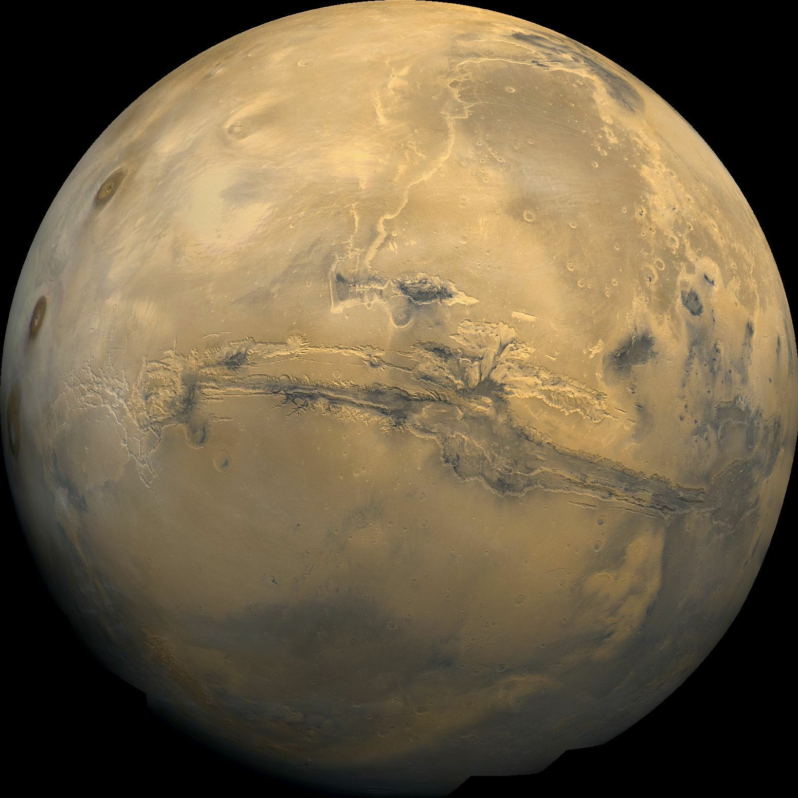

Mars
Mars to czwarta planeta od Słońca, znana jako "Czerwona Planeta" ze względu na wysoką zawartość oksydów żelaza na jej powierzchni. Mars fascynuje naukowców możliwością, że kiedyś mogła na niej istnieć woda i potencjalnie życie. Dzisiaj jest głównym celem misji kosmicznych w poszukiwaniu śladów przeszłego życia.
📊 Podstawowe Dane Astronomiczne
Średnica
6 779 km
Masa
6,417 × 10²³ kg
Odległość od Słońca
227 923 366 km
Okres orbitalny
687 dni
Liczba księżyców
2 (Fobos i Deimos)
Średnia temperatura powierzchni
-65°C
🎨 Model w Skali 1:10¹⁰
Średnica modelu
0,68 mm
Odległość od Słońca na modelu
22,79 m
🌙 Księżyce Marsa
| Księżyc | Średnica orbity rzeczywista (km) | Średnica orbity na modelu (mm) | Status na modelu |
|---|---|---|---|
| Fobos | 9 376 | 1,88 | ✓ Mieści się na podstawie |
| Deimos | 23 463 | 4,69 | ✓ Mieści się na podstawie |
Mars ma dwóch małych księżyców. Fobos i Deimos to wyjątkowo małe księżyce, nazwane od imion greckich bogów strachu i paniki. Oba księżyce mieszczą się na podstawie modelu Marsa, ponieważ ich średnice orbit są mniejsze niż 78 mm.
📖 Ciekawostki
- Mars ma największą górę w Układzie Słonecznym - Olympus Mons (21 km wysoka)
- Kanion Valles Marineris na Marsie jest 4 razy głębszy i 4 razy szerszy niż Wielki Kanion na Ziemi
- Marsjańska atmosfera jest 100 razy rzadsza niż ziemska i składa się głównie z CO₂
- Fobos porusza się szybciej niż obraca się Mars - za kilkaset milionów lat upadnie na Marsa
- Nazwę zawdzięcza rzymskiemu bogu wojny
- Na Marsie padają burze pyłu mogące trwać miesiące i pokrywające całą planetę